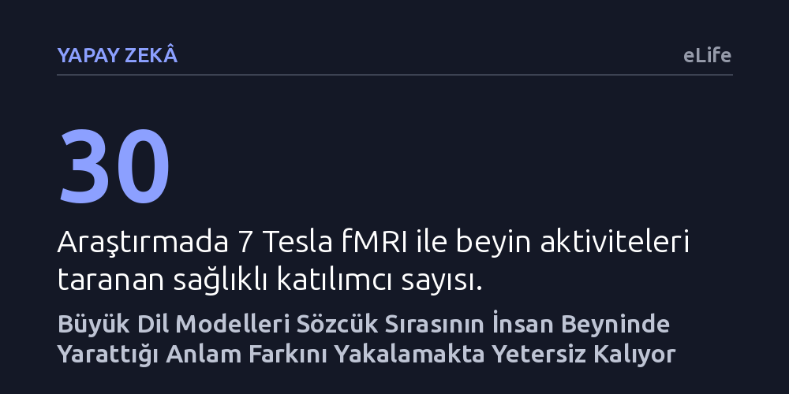

YAPAY-ZEKA · eLife · 2026-10-24
Araştırmacılar, 30 katılımcının 7 Tesla fMRI beyin taramalarını inceleyerek büyük dil modellerinin sözcük sırasına insan beyni kadar duyarlı olup olmadığını araştırdı. Modellerin, sözcükleri aynı ama anlamı farklı cümlelerde beyindeki belirgin ayrımı yakalayamadığı ve insan benzeri temsiller kuramadığı görüldü.
Akıcı metinler üreten yapay zekânın dili insan gibi anladığı varsayımını sarsarak, bu modellerin sözcük dizilişine ve 'kimin kime ne yaptığına' insan beyni kadar duyarlı olmadığını gösteriyor.

Günümüzün büyük dil modelleri, dilbilgisi kurallarına kusursuz uyan, akıcı ve ikna edici metinler üretme konusunda olağanüstü bir başarı sergiliyor. Bu akıcılık, kullanıcıda çoğu zaman yapay zekânın dili tıpkı bir insan gibi anladığı ve kavradığı izlenimini uyandırıyor. Ancak bu sistemlerin dili gerçekten insan zihnine benzer bir biçimde mi anlamlandırdığı, yoksa yalnızca devasa metin yığınlarından öğrendikleri istatistiksel örüntüleri ustaca tekrarlayan gelişmiş birer 'yapay papağan' mı oldukları bilişsel bilimlerin en temel tartışmalarından biridir.
İnsan zihninde bir cümlenin anlamı, yalnızca o cümleyi oluşturan sözcüklerin yalın anlamlarının bir toplamı değildir. Sözcüklerin sırası, birbirleriyle kurdukları dilbilgisel bağlar ve 'kimin kime ne yaptığı' gibi anlamsal roller cümlenin özünü belirler. Örneğin 'köpek adamı ısırdı' ile 'adam köpeği ısırdı' ifadeleri birebir aynı sözcükleri barındırmasına karşın zihnimizde tamamen farklı olayları canlandırır. Bugüne kadar dil modelleriyle insan beynini karşılaştıran birçok çalışma, sözcüklerin bireysel anlamları ile cümlenin yapısal bütünlüğünü birbirinden ayrıştıramadığı için bu soruya net bir yanıt verememişti.
Araştırmacılar, sözcük anlamının yarattığı karmaşayı ortadan kaldırmak ve cümlenin yapısal etkisini doğrudan incelemek amacıyla özel bir deney kurguladı. Çalışmada 30 sağlıklı katılımcıya, sözcük dağarcığı birbirine çok benzeyen ancak dilbilgisel yapıları ve anlamları bilinçli olarak farklılaştırılmış 108 adet cümle okutuldu. Bu cümleler, sözcüklerin tekil anlamları ile cümlenin kompozisyonel yapısını birbirinden tamamen ayrıştıracak şekilde altı ayrı blok halinde tasarlandı. Katılımcıların cümleleri dikkatle okuduğunu doğrulamak için deney aralarına rastgele anlama soruları serpiştirildi.
Katılımcılar her bir cümleyi dörder kez okurken, beyinlerindeki sinirsel aktiviteler yüksek çözünürlüklü 7 Tesla fonksiyonel manyetik rezonans görüntüleme (fMRI) cihazıyla milimetrik hassasiyette kaydedildi. Elde edilen sinirsel aktivite desenleri, özellikle beynin dil şebekesinde incelendi. Araştırmacılar ardından 'temsil benzerliği analizi' (RSA) adı verilen yöntemi kullanarak, insan beynindeki sinirsel temsil kalıplarını sekiz popüler transformatör modeli ve yapısal ilişkileri doğrudan kodlayan semantik modellerle karşılaştırdı.
Analiz sonuçları, dil modelleri ile insan beyni arasında belirgin bir ayrım olduğunu ortaya koydu. Karşılaştırılan cümleler tamamen farklı sözcüklerden oluştuğunda, hem modeller hem de insan beyni bu yüzeysel farkları kolayca saptayabildi. Ancak sözcükleri aynı tutup yalnızca sözcük sırasını ve dolayısıyla anlamsal rolleri değiştiren cümle çiftleri incelendiğinde tablo bütünüyle değişti. İnsan beyninin dil bölgelerindeki sinirsel aktivite desenleri, sözcük sırasının değişmesiyle birlikte köklü bir başkalaşım gösterdi.
Buna karşılık büyük dil modellerinin içsel temsilleri, sözcük sırasındaki bu kritik değişime insan beyni kadar duyarlılık gösteremedi. Transformatör modelleri, sözcük sırasını tamamen yok sayan basit sözcük torbası modellerinden biraz daha iyi sonuç verse de insan beyniyle olan korelasyonu negatif değerde (-0,045) kaldı. Sözdizimsel ve anlamsal rolleri açıkça temsil etmek üzere kurgulanmış VerbNet-CN (+0,070) ve çizge tabanlı AMR modelleri ise beyin temsillerini transformatörlere kıyasla çok daha başarılı bir biçimde açıkladı. Llama 3 mimarisinin katman bazındaki analizi de benzer biçimde ilk katmanların kelime torbası gibi davrandığını, orta katmanlarda hafif bir kıpırdanma olsa da üst katmanlarda beyin benzerliğinin zayıf kaldığını gösterdi.
Bu çalışma, günümüz transformatör mimarilerinin dili yüzeydeki istatistiksel ilişkiler üzerinden başarıyla işlese bile, insan beyninin anlama ulaşırken başvurduğu hiyerarşik yapı ve anlamsal rol kavrayışını henüz yakalayamadığını gösteriyor. Modeller bir sonraki sözcüğü tahmin etme hedefiyle eğitildikleri için, 'kim kime ne yaptı' ayrımını beyindeki derinlikte temsil etmekte zorlanıyor. Bu durum, modellerin ürettiği metinlerin neden zaman zaman mantıksal tutarsızlıklar veya beklenmedik hatalar barındırdığını da açıklamaya yardımcı oluyor.
Elde edilen bulgular iki önemli alana katkı sağlama potansiyeline sahip. İlk olarak, insan beynindeki yapısal işleme mekanizmalarını örnek alan yeni yapay zekâ mimarilerinin geliştirilmesine zemin hazırlayabilir. İkinci olarak, insan beyninin cümle düzeyindeki anlamı nasıl organize ettiğine dair sunulan bu kanıtlar, inme veya beyin hasarı sonrasında gelişen afazi gibi dil bozukluklarının anlaşılması ve klinik tedavilerin geliştirilmesinde nörobilimciler için değerli bir referans sunuyor.